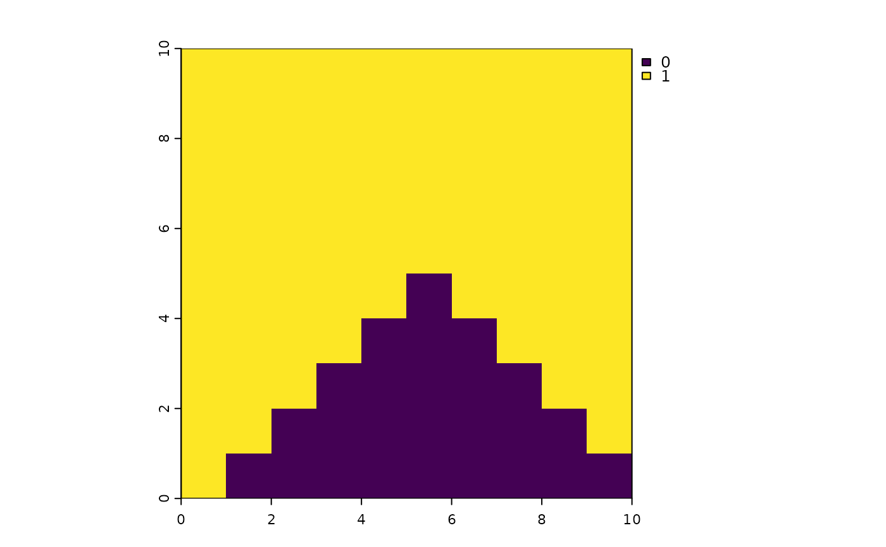

Classify disturbances that have occurred in a user defined time
period. The output from this function can be used as either the
natDist or anthroDist inputs for caribouMetrics() or
disturbanceMetrics().
Arguments
- distYr
sf object, SpatRaster or RasterLayer. A simple feature collection or raster layer covering the focal area and including the year of disturbance or time since disturbance as well as geometry (multipolygon) of the disturbance.
- endYr
numeric default 0. Four digit year indicating the latest year to include from
distYr. If 0 assumedateFieldvalues indicate time since disturbance.- numCumYrs
numeric. Number of years before
endYrto include.- template
SpatRaster or RasterLayer. A raster of the focal region, used as a template to which disturbance information is projected. This layer's dimensions determine the dimensions of the output. It is recommended to use the
landCoverraster layer used incaribouMetrics()ordisturbanceMetrics()to ensure equal dimensions- dateField
character. Name of the column in which disturbance year/time since disturbance is recorded.
Value
Returns a binary SpatRaster with the same dimensions as the
template input. Values of 1 represent areas of disturbance
See also
Functions for calculating disturbance:
DisturbanceMetrics-class,
disturbanceMetrics(),
results(),
updateDisturbance()
Examples
library(sf)
#> Linking to GEOS 3.12.1, GDAL 3.8.4, PROJ 9.4.0; sf_use_s2() is TRUE
# create template raster
lc <- terra::rast(nrows = 10, ncols = 10, xmin = 0, xmax = 10, ymin = 0,
ymax = 10, crs = "EPSG:5070")
# create fire polygons
corners <- matrix(c(0,0,10,10,5, 0,10,10,0,5), ncol = 2)
fireYr <- st_sf(FIRE_YEAR = c(1990, 2000, 2009, 2015),
geometry = st_sfc(st_polygon(list(corners[c(1,2,5, 1),])),
st_polygon(list(corners[c(2,3,5, 2),])),
st_polygon(list(corners[c(3,4,5, 3),])),
st_polygon(list(corners[c(4,1,5, 4),]))))
fireYr <- st_set_crs(fireYr, 5070)
# three polygons should be considered disturbed (1) but the 2015 polygon should
# not (0)
cumFirePresence <- reclassDist(fireYr,
endYr = 2010,
numCumYrs = 40,
template = lc,
dateField = "FIRE_YEAR")
plot(cumFirePresence)

# with time since disturbance
fireYr$FIRE_YEAR <- c(50, 15, 10, 20)
cumFirePresence2 <- reclassDist(fireYr,
endYr = 0,
numCumYrs = 40,
template = lc,
dateField = "FIRE_YEAR")
plot(cumFirePresence2)